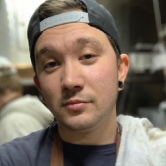

Woke! was originally founded by Max Daniel as “Food With Love” in the front of a run-down community outreach center that specializes in food donation services. Newly sober and needing purpose, Max Daniel turned the abandoned Panaderia into a foodie hotspot for cheap but eclectic fusion food. But Food with Love did not just cater to its trendy fan base… The restaurant also donated food to low-income families, employed and trained employees with criminal, addiction and teen pregnancy backgrounds and fulfilled high school students’ community service hours. After a year, Food With Love packed up its pots and spatulas and took the mission mobile, rebranding as Woke! This L.A. based food truck still offers all of the same community supports as Food with Love once did, but has now committed to the additional purpose of teaching history through culinary art. The rebrand to Woke! was created, designed and overseen by Kashmir Hughes, under the influence of her passion for history, culture and social justice. Michael Powers joined the team within the first year of the transition to the truck, bringing his unique energy to the multiethnic mix.
The Woke! Truck is now servicing an area near you. Please check our locations calendar to join our movement. Come, eat, learn and Feed Your Body and Your Mind.™

Max Lucas Daniel
Founder/ Owner/ Executive Chef/ Booking
Chef Max is an Irish American business owner who was born May 15th 1991 (Taurus) in New York, New York. Though his family runs a very successful business in music entertainment logistics, he felt his passions were elsewhere and traveled to Los Angeles as just a teenager to pursue his dreams as a musician. Like so many great musicians before him, Max fell to the pressures of drugs and alcohol and got trapped in the perils of addiction. When Max finally had the courage to get sober, his parents begged him to return to the East Coast and pick up the family business. He refused. Instead he poured his time and energy into volunteering at a local failing community outreach center. At the owner’s request, he turned a small abandoned panaderia into a flourishing taqueria, helping the center to finally turn a profit. This kept the community center’s doors open, maintaining access to an affordable array of food for low-income families. Through this community, Max found his true calling- cooking. Blending food with community service, Max began to earn a living here. A year later, Max and his romantic/ business partner Kashmir Hughes rebranded the restaurant and took it mobile to a food truck, which they now use to teach history and fulfill the same community services.
Kashmir Hughes
Founder/ Owner/ Content Designer/ Client Relations
Kashmir is a Black Caribbean American business owner, child behavioral therapist and writer. She was born June 17th 1990 (Gemini) in Los Angeles California. Born to a low-income family and from a household of domestic abuse, Kashmir shattered statistics by putting herself through college and earning seven degrees in Social Sciences. She met Max in Los Angeles while she was working on her first degree. The two quickly became inseparable, and the pair followed Kashmir’s educational goals up North into Santa Barbara and eventually into Santa Cruz. When they returned to L.A., Max finally decided to get sober. When Max asked Kashmir if he should work for his family’s company and start off at a hefty salary or risk their sanity and finances to build a restaurant in a community center, Kashmir had only one question to ask: If you follow in your father’s footsteps, will you be happy? It became instantly clear that a new path needed to be forged and Kashmir was going to be there to support it. Max and Kashmir co-founded the restaurant together in 2017 and Kashmir somehow found the time in her caseload to work the restaurant with Max in the late afternoons and during the summer. But Kashmir’s greatest contribution came when the restaurant transitioned into a food truck and rebranded as Woke! Being a very politically charged person, and as a polyamorous Black intersectional feminist, Kashmir sought to increase visibility towards these groups. As far as the controversy regarding the name, Kashmir has only shrugged. “Max knows cuisine,” she states, “but I know culture.” History and culture are messy and often controversial she grants, but she intends to ensure her company is in the making of history and not just the teaching of it.